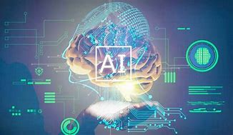

Artificial Intelligence (AI) has witnessed a remarkable evolution in recent years, propelling us into a new era that holds immense potential and profound implications for society. With advancements in machine learning, deep neural networks, and big data, AI is revolutionizing various sectors and transforming the way we live, work, and interact. In this essay, we will explore the new era of AI, its impact on different aspects of society, and the potential it holds for shaping the future.
AI and Automation:
.jpeg)
One of the key features of the new era of AI is its ability to automate tasks that were previously performed by humans. AI-powered systems and robots are increasingly taking over repetitive, mundane, and dangerous jobs, freeing up human potential for more creative and complex tasks. Automation in industries such as manufacturing, logistics, and customer service not only enhances efficiency but also presents opportunities for workers to upskill and engage in higher-value work.
Enhancing Healthcare:
AI is making significant strides in the field of healthcare, transforming diagnostics, treatment, and patient care. Machine learning algorithms can analyze vast amounts of medical data to identify patterns, predict disease progression, and assist in accurate diagnoses. AI-powered robotic surgeons and medical chatbots are augmenting the capabilities of healthcare professionals, leading to more precise surgeries, personalized treatment plans, and improved patient outcomes.
Smarter Cities and Infrastructure:
.jpeg)
AI is driving the development of smart cities and intelligent infrastructure systems. Through data analysis and predictive modeling, AI algorithms can optimize energy consumption, traffic flow, and waste management. Smart grids, autonomous vehicles, and adaptive transportation systems are improving efficiency, reducing environmental impact, and enhancing the quality of life in urban areas.
Navigating the Consequences of Artificial Intelligence: Balancing Advancement with Responsibility
The rise of Artificial Intelligence (AI) brings with it a host of consequences that warrant careful consideration. On one hand, AI holds immense promise for improving efficiency, enhancing productivity, and advancing various fields such as healthcare, transportation, and education. However, there are potential consequences that need to be addressed. One major concern is the impact of AI on the workforce. As automation and AI technologies continue to advance, there is a risk of job displacement and the widening of economic inequalities. Additionally, ethical considerations arise with the growing use of AI algorithms that have the potential to perpetuate biases, invade privacy, and pose threats to cybersecurity. Ensuring transparency, accountability, and responsible development of AI systems becomes crucial in mitigating these consequences and fostering a society that benefits from the advantages of AI while safeguarding against its potential negative impacts.
.jpeg)
written by
~G.revanth surya